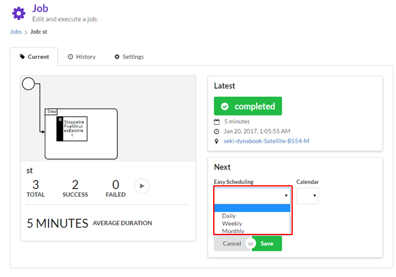

ジョブのスケジューリング
スケジュールで自動実行する
cron expressions形式でスケジュールを登録することで、ジョブを自動実行できます。

スケジュールの簡易登録
- スケジュールのパターン（日次・週次・月次）を選択します。

- 発火時間を入力します。

- cron expressionsが出力されます。

カレンダーの登録方法
1.トップページから右側メニューのプルダウン選択によりカレンダーに移動

2.newボタン押下

3.カレンダーを作成

カレンダーを設定して休日はジョブの実行を抑止する
cron expressionsとともにカレンダーも設定することでカレンダーに休日として登録されている日はジョブの実行を抑止することができます。